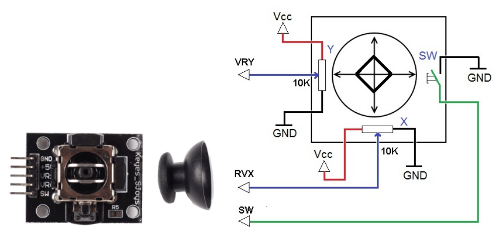
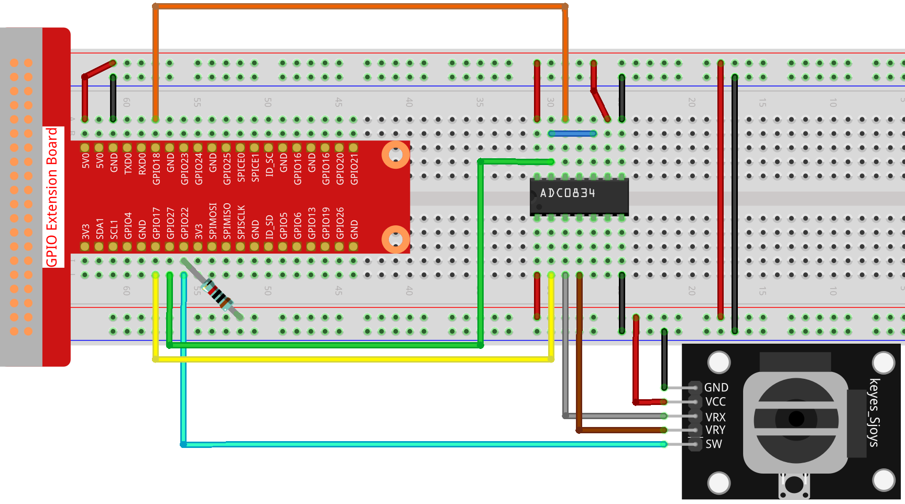

Nota
Ciao, benvenuto nella SunFounder Raspberry Pi & Arduino & ESP32 Enthusiasts Community su Facebook! Approfondisci le tue conoscenze su Raspberry Pi, Arduino e ESP32 insieme ad altri appassionati.
Perché unirti a noi?
Supporto esperto: Risolvi problemi post-vendita e sfide tecniche con l’aiuto della nostra community e del nostro team.
Impara e condividi: Scambia consigli e tutorial per migliorare le tue competenze.
Anteprime esclusive: Ottieni l’accesso anticipato agli annunci di nuovi prodotti e anteprime esclusive.
Sconti speciali: Approfitta di sconti esclusivi sui nostri prodotti più recenti.
Promozioni e omaggi festivi: Partecipa a concorsi e promozioni in occasione delle festività.
üëâ Pronto per esplorare e creare con noi? Clicca su [Qui] e unisciti oggi stesso!
2.1.6 Joystick
Introduzione
In questo progetto, impareremo come funziona un joystick. Manovreremo il Joystick e mostreremo i risultati sullo schermo.
Componenti

Principio di Funzionamento
Joystick
L’idea di base di un joystick è quella di tradurre il movimento della leva in informazioni elettroniche che un computer può elaborare.
Per comunicare all’intero intervallo di movimento al computer, un joystick deve misurare la posizione della leva su due assi: l’asse X (sinistra-destra) e l’asse Y (alto-basso). Come in geometria di base, le coordinate X-Y individuano esattamente la posizione della leva.
Per determinare la posizione della leva, il sistema di controllo del joystick monitora semplicemente la posizione di ciascun asse. Il design convenzionale del joystick analogico fa questo con due potenziometri, o resistori variabili.
Il joystick ha anche un ingresso digitale che si attiva quando il joystick viene premuto verso il basso.
Schema a Blocchi
Quando vengono letti i dati del joystick, ci sono alcune differenze tra gli assi: i dati degli assi X e Y sono analogici e richiedono l’uso dell’ADC0834 per convertire il valore analogico in valore digitale. I dati dell’asse Z sono digitali, quindi è possibile utilizzare direttamente il GPIO per leggerli, oppure utilizzare anche l’ADC.


Procedure Sperimentali
Passo 1: Costruisci il circuito.
{kind=link}
Per Utenti Linguaggio C
Passo 2: Vai alla cartella del codice.
cd ~/davinci-kit-for-raspberry-pi/c/2.1.6/
Passo 3: Compila il codice.
gcc 2.1.6_Joystick.c -lwiringPi
Passo 4: Esegui il file eseguibile.
sudo ./a.out
Dopo aver eseguito il codice, ruota il Joystick: i valori corrispondenti di x, y e Btn verranno visualizzati sullo schermo.
Nota
Se non funziona dopo l’esecuzione o appare un messaggio di errore: "wiringPi.h: No such file or directory", consulta Il codice C non funziona?.
Codice
#include <wiringPi.h>
#include <stdio.h>
#include <softPwm.h>
typedef unsigned char uchar;
typedef unsigned int uint;
#define ADC_CS 0
#define ADC_CLK 1
#define ADC_DIO 2
#define BtnPin 3
uchar get_ADC_Result(uint channel)
{
uchar i;
uchar dat1=0, dat2=0;
int sel = channel > 1 & 1;
int odd = channel & 1;
digitalWrite(ADC_CLK, 1);
delayMicroseconds(2);
digitalWrite(ADC_CLK, 0);
delayMicroseconds(2);
pinMode(ADC_DIO, OUTPUT);
digitalWrite(ADC_CS, 0);
// Bit di inizio
digitalWrite(ADC_CLK,0);
digitalWrite(ADC_DIO,1); delayMicroseconds(2);
digitalWrite(ADC_CLK,1); delayMicroseconds(2);
// Modalità Singola
digitalWrite(ADC_CLK,0);
digitalWrite(ADC_DIO,1); delayMicroseconds(2);
digitalWrite(ADC_CLK,1); delayMicroseconds(2);
// ODD
digitalWrite(ADC_CLK,0);
digitalWrite(ADC_DIO,odd); delayMicroseconds(2);
digitalWrite(ADC_CLK,1); delayMicroseconds(2);
// Selezione
digitalWrite(ADC_CLK,0);
digitalWrite(ADC_DIO,sel); delayMicroseconds(2);
digitalWrite(ADC_CLK,1);
digitalWrite(ADC_DIO,1); delayMicroseconds(2);
digitalWrite(ADC_CLK,0);
digitalWrite(ADC_DIO,1); delayMicroseconds(2);
for(i=0;i<8;i++)
{
digitalWrite(ADC_CLK,1); delayMicroseconds(2);
digitalWrite(ADC_CLK,0); delayMicroseconds(2);
pinMode(ADC_DIO, INPUT);
dat1=dat1<<1 | digitalRead(ADC_DIO);
}
for(i=0;i<8;i++)
{
dat2 = dat2 | ((uchar)(digitalRead(ADC_DIO))<<i);
digitalWrite(ADC_CLK,1); delayMicroseconds(2);
digitalWrite(ADC_CLK,0); delayMicroseconds(2);
}
digitalWrite(ADC_CS,1);
pinMode(ADC_DIO, OUTPUT);
return(dat1==dat2) ? dat1 : 0;
}
int main(void)
{
uchar x_val;
uchar y_val;
uchar btn_val;
if(wiringPiSetup() == -1){ //quando l'inizializzazione di wiring fallisce, stampa un messaggio sullo schermo
printf("setup wiringPi failed !");
return 1;
}
pinMode(BtnPin, INPUT);
pullUpDnControl(BtnPin, PUD_UP);
pinMode(ADC_CS, OUTPUT);
pinMode(ADC_CLK, OUTPUT);
while(1){
x_val = get_ADC_Result(0);
y_val = get_ADC_Result(1);
btn_val = digitalRead(BtnPin);
printf("x = %d, y = %d, btn = %d\n", x_val, y_val, btn_val);
delay(100);
}
return 0;
}
Spiegazione del Codice
uchar get_ADC_Result(uint channel)
{
uchar i;
uchar dat1=0, dat2=0;
int sel = channel > 1 & 1;
int odd = channel & 1;
digitalWrite(ADC_CLK, 1);
delayMicroseconds(2);
digitalWrite(ADC_CLK, 0);
delayMicroseconds(2);
pinMode(ADC_DIO, OUTPUT);
digitalWrite(ADC_CS, 0);
// Bit di avvio
digitalWrite(ADC_CLK,0);
digitalWrite(ADC_DIO,1); delayMicroseconds(2);
digitalWrite(ADC_CLK,1); delayMicroseconds(2);
// Modalità Singola
digitalWrite(ADC_CLK,0);
digitalWrite(ADC_DIO,1); delayMicroseconds(2);
digitalWrite(ADC_CLK,1); delayMicroseconds(2);
......
Il processo operativo di questa funzione è dettagliato in 2.1.4 Potenziometro.
while(1){
x_val = get_ADC_Result(0);
y_val = get_ADC_Result(1);
btn_val = digitalRead(BtnPin);
printf("x = %d, y = %d, btn = %d\n", x_val, y_val, btn_val);
delay(100);
}
VRX e VRY del Joystick sono collegati rispettivamente a CH0 e CH1 dell’ADC0834. Quindi, la funzione getResult() viene utilizzata per leggere i valori di CH0 e CH1, che vengono poi memorizzati nelle variabili x_val e y_val. Inoltre, viene letto il valore di SW del joystick, memorizzato nella variabile Btn_val. Infine, i valori di x_val, y_val e Btn_val vengono stampati con la funzione print().
Per gli utenti Python
Passaggio 2: Accedi alla cartella del codice.
cd ~/davinci-kit-for-raspberry-pi/python/
Passaggio 3: Esegui.
sudo python3 2.1.6_Joystick.py
Dopo aver eseguito il codice, sposta il Joystick e i valori corrispondenti di x, y e Btn verranno visualizzati sullo schermo.
Codice
Nota
Puoi Modificare/Reimpostare/Copiare/Eseguire/Interrompere il codice qui
sotto. Ma prima, devi accedere al percorso del codice sorgente come davinci-kit-for-raspberry-pi/python.
import RPi.GPIO as GPIO
import ADC0834
import time
BtnPin = 22
def setup():
# Imposta il metodo GPIO su BCM Numbering
GPIO.setmode(GPIO.BCM)
GPIO.setup(BtnPin, GPIO.IN, pull_up_down=GPIO.PUD_UP)
ADC0834.setup()
def destroy():
# Rilascia le risorse
GPIO.cleanup()
def loop():
while True:
x_val = ADC0834.getResult(0)
y_val = ADC0834.getResult(1)
Btn_val = GPIO.input(BtnPin)
print ('X: %d Y: %d Btn: %d' % (x_val, y_val, Btn_val))
time.sleep(0.2)
if __name__ == '__main__':
setup()
try:
loop()
except KeyboardInterrupt: # Quando si preme 'Ctrl+C', viene eseguita la funzione destroy().
destroy()
Spiegazione del Codice
def loop():
while True:
x_val = ADC0834.getResult(0)
y_val = ADC0834.getResult(1)
Btn_val = GPIO.input(BtnPin)
print ('X: %d Y: %d Btn: %d' % (x_val, y_val, Btn_val))
time.sleep(0.2)
VRX e VRY del Joystick sono collegati rispettivamente a CH0 e CH1 dell’ADC0834. La funzione getResult() viene quindi utilizzata per leggere i valori di CH0 e CH1, che vengono memorizzati nelle variabili x_val e y_val. Inoltre, il valore di SW del joystick viene letto e memorizzato nella variabile Btn_val. Infine, i valori di x_val, y_val e Btn_val vengono stampati con la funzione print().